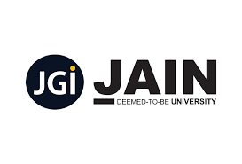

Hi, I'm Mohammed Jawad Pasha, a software professional currently working at Simplilearn.
I have experience in developing comprehensive learning materials, creating real-time projects, and staying up-to-date with the latest software technologies and trends.
Jain University
Year: April 2019 - May 2022
California Institute of Technology
Year: March 2022 - May 2023
Dates: Jan 2022 - Present
Angular, json-server, Cypress
This application is built with the Angular framework as the frontend and includes pages for listing and adding employees, as well as updating employee details. The json-server serves as the backend, and there are test scripts written in Cypress.
View ProjectSelenium, Cucumber
This project involves the functional testing of an e-commerce web application using Selenium classes and Cucumber step definitions. The ecomm web application is a static web application with various components and pages, including HTML, CSS, and JS files.
View ProjectAngular, MySQL, Spring Boot
This project involves the development of an ecommerce application with two frontend web apps (admin and end user) using the Angular framework. MySQL is utilized for database tables and schemas, while the backend API is built using the Spring Boot framework.
View ProjectHTML, CSS, JavaScript, Bootstrap
This application displays student's results based on their registration number. The mock API serves as a database containing all the students' details in JSON format. The business logic is implemented using vanilla JavaScript through a fetch API call.
View ProjectJava, JSP, Servlets, MySQL, Apache
Admins can add quizzes, and end users can attempt them and view their scores on the scoreboard. Skills used include Java, JSP, Servlets, MySQL, and Apache.
View ProjectPython, Django, MongoDB
This project includes various real-time features where end users can perform transaction requests and apply for service requests. Admins can approve or deny these requests. The project utilizes Python, Django, and MongoDB.
View ProjectC++, Java, Python, JavaScript
Angular, Spring, Django
MySQL, MongoDB
HTML, CSS, Bootstrap, Servlets, JSP
Git
Azure, AWS
Selenium, Cucumber, Postman, JMeter
Docker, Jenkins, Kubernetes
Research, Course Design, Project Management